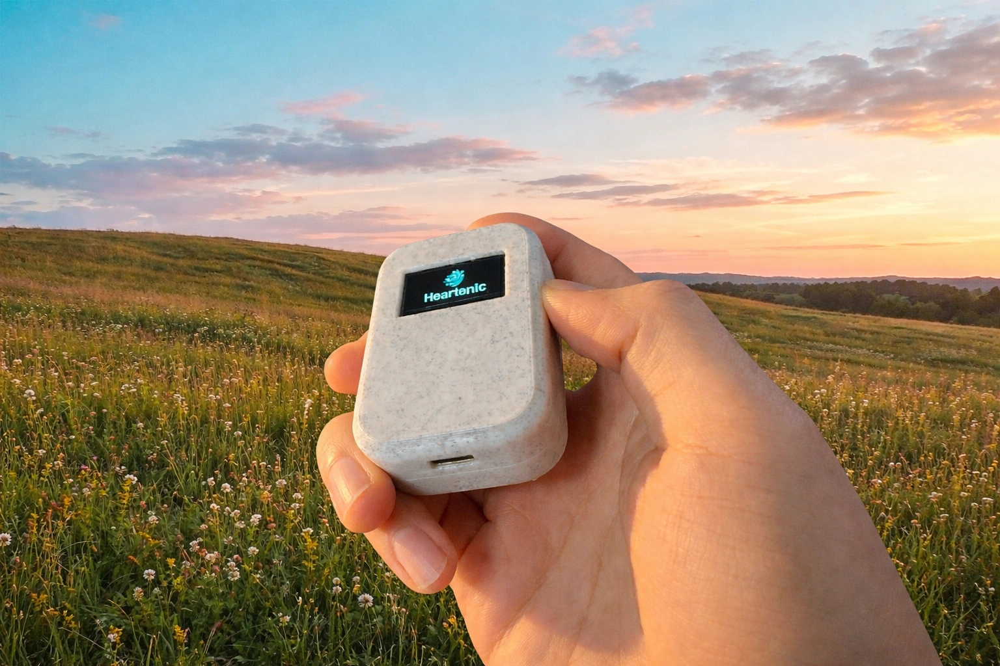

¿Quiénes somos?
Tecnología que te ayuda a volver a ti
Nuestra Visión
En Heartenic creemos que la tecnología no debería alejarnos de nosotros mismos, sino ayudarnos a volver. Creamos herramientas —digitales y físicas— que nos ayuden a reconectar con nosotros mismos.
Es un movimiento social y cultural que busca normalizar el autocuidado, y hacer del bienestar mental algo tan cotidiano y aspiracional como hacer ejercicio o comer saludable.
Nuestra Misión
En un mundo saturado de distracciones, métricas y algoritmos diseñados para capturar nuestra atención, Heartenic nace para cerrar la brecha entre el avance tecnológico y las necesidades humanas esenciales. Nuestra misión es acompañarte en tu proceso de autoconocimiento, bienestar y crecimiento personal.
Crecimiento Consciente
Fomentamos el desarrollo personal a través de la tecnología mindful y herramientas de autoconocimiento.
Privacidad Total
Tus datos son parte de ti y son sagrados. Todo se procesa localmente en tu dispositivo.
Bienestar Accesible
Buscamos democratizar el acceso a herramientas de meditación y mindfulness de nivel profesional.
Únete al Movimiento
Si esto despertó algo en tu interior, acompáñanos. Eres parte del cambio que imaginamos.
Conoce El Meditador